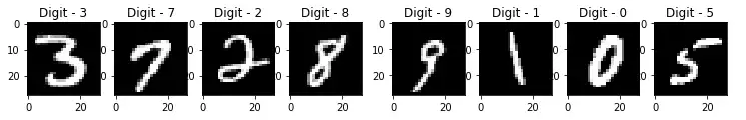
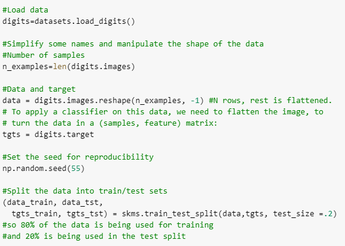
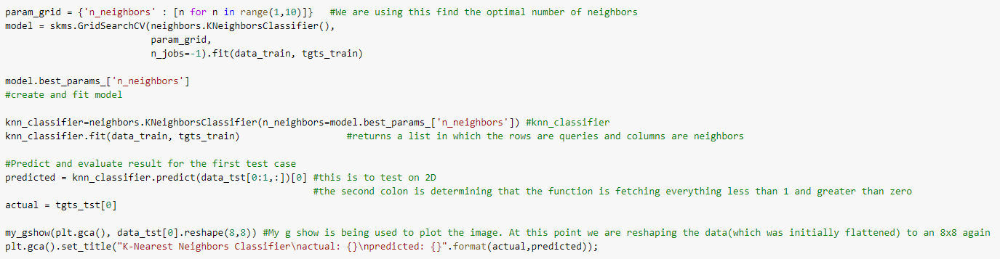
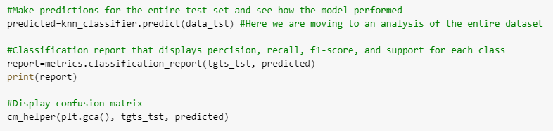
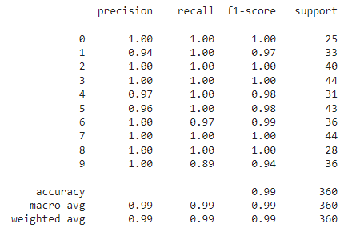
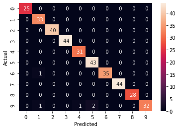
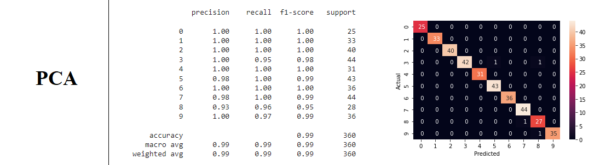

Background
Digit recognition can have many real-life implications, including helping people with vision impairments to read and interpret numbers, making it easier for businesses to process large amounts of numerical data, and even improving the accuracy of handwriting recognition software. In terms of specific problems it can solve, digit recognition can help with tasks such as automatically sorting mail or packages based on their addresses, transcribing handwritten documents, and even allowing computers to understand and respond to handwritten commands. This technology can be particularly useful for individuals and organizations that need to process large amounts of numerical data quickly and accurately.
Introduction
The field of digit recognition has been an active area of research in the domain of machine learning and computer vision. In recent years, advances in deep learning and neural networks have enabled the development of highly accurate digit recognition systems.
Python is a popular programming language for implementing machine learning algorithms, due to its simplicity and ease of use. In this project, we will be using Python to build a digit recognition system that can accurately classify handwritten digits from the sklearn digits dataset.
The sklearn digits dataset is a collection of images of handwritten digits, and each image is represented as a 8x8 array of pixels, with each pixel having a value between 0 and 16. There are a total of 1797 images in the dataset, so there are 1797 x 8 x 8 = 115,136 total digits in the dataset.
The goal of this project is to build a digit recognition system using Python and the digits dataset that can accurately classify handwritten digits with a high degree of precision. To achieve this, we will implement a supervised learning classifier such as the KNN algorithm. The KNN model will be trained on the digits training dataset, and its performance will be evaluated using the test dataset.

Methodology
In order to accurately evaluate the performance of our digit recognition model, we will follow a thorough procedure involving cross validation, parameter optimization, and testing.
First, we will use cross validation to ensure that our model is not overfitting to the training data. This involves dividing the data into multiple folds and training the model on each fold, rotating which fold is used for testing. This allows us to get a better sense of how the model will perform on unseen data.
Next, we will use the grid search technique to find the best parameters for our model. This involves specifying a range of values for each hyperparameter and training the model with each possible combination of parameter values. By comparing the performance of the model with each combination, we can determine the set of parameters that yields the best results.
Once we have identified the optimal set of parameters, we will split our dataset into a training set and a test set. The model will be trained on the training set and evaluated on the test set in order to gauge its accuracy and reliability. We will report the performance of the model using metrics such as precision, recall, and F1 score.
Finally, we will create a confusion matrix to visualize the model's performance. This matrix will show us which digits the model is accurately identifying and which it is misclassifying. This will give us a better understanding of the strengths and weaknesses of our model and help us to identify areas for improvement.

This is a code snippet from our Python notebook. It is preparing the data to be used based on an initial test case.
The code defines several variables: n_examples, which is the number of samples (or images) in the dataset; data, which is the image data reshaped into a 2D array of size (n_examples, 64), where each row represents an image and each column represents a pixel; and tgts, which is the target (or label) data, which is an array of size (n_examples,) containing the correct digit for each image.
Next, the code sets the seed for the random number generator using np.random.seed, which will ensure that the results are reproducible. Then, it uses the train_test_split function from sklearn.model_selection (imported as skms) to split the data into a training set and a test set, with the test set comprising 20% of the data. The resulting arrays are data_train and tgts_train for the training set, and data_tst and tgts_tst for the test set. These arrays will be used to train and evaluate the digit recognition model.
Hyperparameter Tuning
Hyperparameter optimization, also known as hyperparameter tuning, is the process of selecting the best values for the hyperparameters of a machine learning model. Hyperparameters are values that are set prior to training the model and cannot be learned from the data. They control the overall behavior and performance of the model, and finding the optimal values for them is crucial for good model performance.
Here we will be using a k-nearest neighbors (KNN) classifier, which has several hyperparameters that can affect its performance. One of these hyperparameters is the number of neighbors (n_neighbors) that the classifier uses to make predictions. In order to find the optimal value for n_neighbors, we will use the GridSearchCV function from sklearn.model_selection. This function performs a grid search over a range of values for n_neighbors and selects the value that yields the best results on the training data.

The second part of the code creates and fits a KNN classifier using the optimal number of neighbors. The KNeighborsClassifier class is initialized with the n_neighbors parameter set to the optimal value found by GridSearchCV, and is then fit to the training data using the fit method.
Finally, the code uses the KNN classifier to classify the first example in the test set (data_tst[0:1,:]). The predict method returns a list of predictions, so the first element of the list ([0]) is extracted. The actual label for this example (tgts_tst[0]) is also retrieved, and the image data for the example is plotted using a custom function my_gshow. The title of the plot includes the actual and predicted labels for the example.
Model Performance
Here we are going to evaluate the performance of the k-nearest neighbors (KNN) classifier on the test set of data for the digit recognition project.

First, looking at the code, the 'predict' method of the KNN classifier is used to make predictions for all of the examples in the test set (data_tst). The resulting list of predictions is stored in the predicted variable.
Next, the classification_report function from sklearn.metrics is used to generate a classification report for the predictions. The classification report includes metrics such as precision, recall, and F1 score for each class (i.e., each digit). The actual labels (tgts_tst) and the predicted labels (predicted) are passed as arguments to the function. The resulting report is printed to the console.

In this table, all of the classes have high precision, recall, and F1 scores, with most of them being close to 1.00. This indicates that the KNN classifier is performing very well on the test set, with few incorrect predictions. The overall accuracy of the model, which is the proportion of correct predictions out of all predictions, is also very high (0.99).
The macro average and weighted average metrics, which are averages of the metrics across all classes, are also very close to 1.00, further indicating the good performance of the model. The support values show that there are similar numbers of examples for each class in the test set.
The KNN classifier seems to be able to effectively identify the correct digit for each example based on the patterns in the pixel values of the images.

Finally, the confusion matrix is plotted using a custom function cm_helper. The confusion matrix shows the number of times each class was predicted for each actual class. The main diagonal of the matrix represents the correct predictions, while the off-diagonal elements represent incorrect predictions. The confusion matrix can be used to identify the strengths and weaknesses of the model and to understand which classes it is having difficulty distinguishing.
Overall, the confusion matrix suggests that the KNN classifier is performing well on the test set, with few incorrect predictions. This is consistent with the other evaluation metrics, such as precision, recall, and F1 score, which also showed good performance for most classes. The good performance of the KNN classifier on the test set reflects the effectiveness of the algorithm for this particular task and suggests that it is capable of accurately recognizing digits in images.
Results
We can repeat the process of hyperparameter tuning and applying other machine learning models such as Support Vector Classifier (SVC) and Principal Component Analysis (PCA) and compare the results.

In all three methods the digits 0 and 2 were identified with 100% accuracy. On the other hand, 5 and 9 were misinterpreted at least once in each algorithm. There were two incorrect predictions for digit 1 for the KNN method, but 100% accuracy in the other two methods.
It appears that most accurate setup was the second one (Support Vector Machine). This set up provided the best results overall. The expectation could have been that the SVM with PCA features would be the best approach because it shows a more robust structure and is the most complex one. However, the accuracy of the results depend highly on the size of the image (and the ones in this dataset are very small).
Conclusion
It is worth noting that the performance of a machine learning model can depend on various factors, such as the quality and size of the data, the choice of hyperparameters, and the specific problem being solved. In this project, the models were trained on a relatively small dataset of images and were optimized using hyperparameter tuning, which likely contributed to their good performance.
There are a number of ways in which this project could be extended or further developed. For example, additional models could be tested to see how they perform on the dataset. Other classification algorithms, such as decision trees, random forests, or neural networks, could be trained and evaluated to see if they achieve similar or better results.
Another possible extension of this project would be to explore more advanced techniques for preprocessing the data or improving the model performance. For example, techniques such as data augmentation, feature selection, or ensembling could be applied to see if they improve the model results.
Additionally, this data could be used for other applications beyond digit recognition. For example, the data could be used to train a machine learning model to recognize other types of objects or patterns in images, or to perform other tasks such as image segmentation or object detection.
Overall, this project highlights the potential of machine learning techniques for image recognition tasks, and the importance of careful data preparation and model selection in achieving good results.